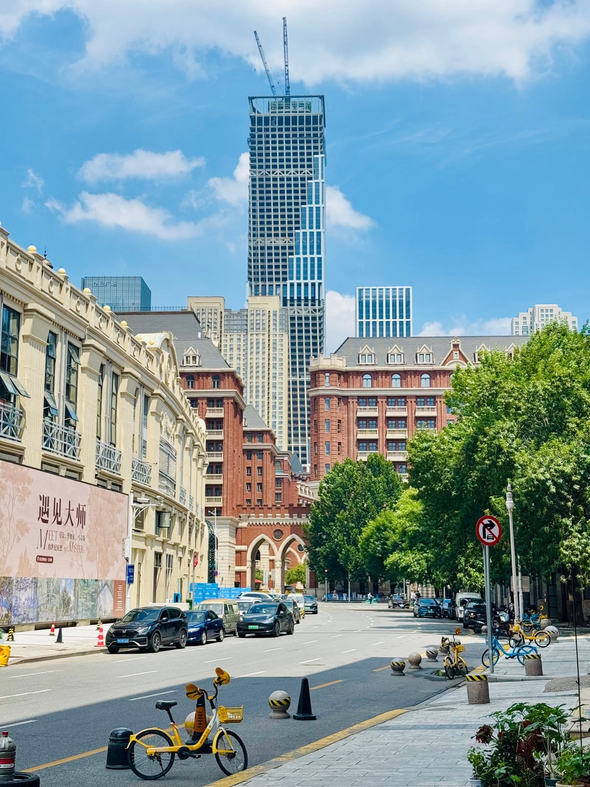
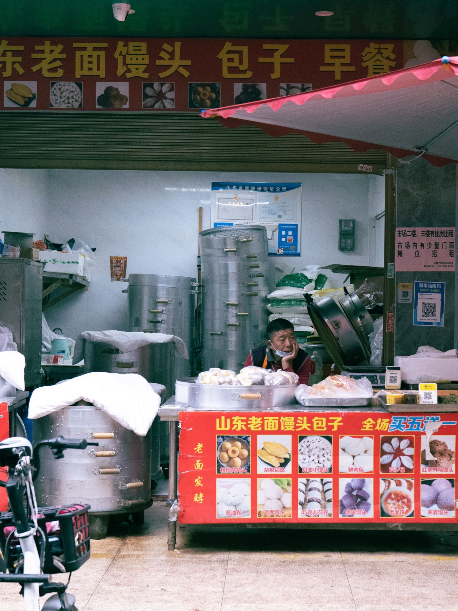

天津第一次有了米其林指南。这件事比"谁摘了星"更值得写。
10 月 27 日，《2027 北京天津米其林指南》在天津发布。两个变化同时发生：天津首次入榜，北京不再单独出指南。上一版北京榜单收录 32 家星级餐厅，三星 2 家，那份名单曾经是中国北方高端餐饮唯一被国际体系认证的坐标。从这一版起，坐标改成了"京津"。
01｜合并一本，意味着什么
指南的每一次"合并"，都先是一笔成本账。
一本独立的城市指南，意味着评审团队要为一个城市单独配置匿名到访的次数、周期与覆盖密度。巴黎、东京、纽约撑得起这种密度，因为它们本身就是目的地。当一座城市的餐饮体量还不足以独立支撑一套评审，最经济的做法是把相邻城市并成一册。米其林在欧洲早已这么做，比荷卢、瑞士、北欧都是区域册。
对读者的影响是具体的：区域册里，一座城市的名额会被另一座稀释。北京的三星不会因为天津加入而变多，天津的一星也不会因为北京在场而更容易。但对天津，从"没有"到"有"，是从零到一的差别。一座城市第一次被纳入国际评审视野，酒店与餐厅的定价逻辑会立刻跟着变。
02｜酒店餐厅，仍然是摘星的主力
开榜前，天津本地食客的押注高度一致，方向全落在酒店里：四季与丽思卡尔顿的粤菜。这个判断并不需要内幕，它来自一个反复验证过的规律，国际奢华酒店里的高级粤菜，历来是米其林在中国最稳定的摘星单元。
今年 8 月，扬州香格里拉香宫挂上一星。上海前滩华尔道夫的福承中餐厅进入《2026 沪苏浙米其林指南》，那家酒店开业首年同时拿下一星钥与餐厅入选，是少见的"住"与"食"双维度认可。天津的情况更极端：这座城市没有高端餐厅扎堆的商场，贵店大多挂在四季、丽思卡尔顿这些酒店名下。
对旅行者的实用结论是：在一个新开榜的城市，想吃到最稳的一顿，先看酒店，再看榜单。

03｜榜单之外，天津的另一套系统
有一个数字比榜单更说明问题。有博主把天津人均 300 元以上的餐厅盘了一遍：总共 70 余家，日料占约 40%，西餐约 20%，天津菜只占约 10%。
也就是说，那个早点能卷赢全国的天津，在高端局里几乎没有座位。煎饼馃子、锅巴菜、炸糕、卷圈，全在人均十元的区间里。西北角 200 多家食品商户，日均一两万人次，节假日能到八到十万。清早六点的队形，是这座城市真正的餐饮基础设施。
两套系统并行，互不通信。米其林评的是盘子里的五项：食材品质、技法、风味平衡、个性、多次到访的一致性。它不评一条街的烟火气，也不打算评。所以每次发榜都会出现同一个场景：榜单给出的答案，和本地人心里的答案，不是同一个问题。

04｜怎么用这份榜
三句实在话。
别急着订刚上榜的新星。首版名单里的星，大概率集中在酒店粤菜与贵价店，人均不会便宜，让"星价"先飞一会儿。
真正和日常有关的是必比登推介。平价市井味全在这一档，它也最能反映一座城市真实的饮食结构。
最后，把榜单当地图，不要当分数。它的价值是告诉你"这家值得专程去一次"，而不是"这家比那家好"。在天津这样的城市，一张地图的作用尤其有限：最好吃的东西，通常不在图上。
完整名单以米其林指南官方渠道发布为准。